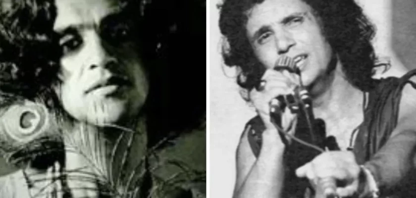

Debaixo dos caracóis dos seus cabelos
Canção de Roberto Carlos
Em primeiro lugar, a canção utiliza uma técnica literária chamada metonímia, mencionando os "cabelos encaracolados" de Caetano Veloso como uma maneira de se referir a ele sem mencionar seu nome explicitamente. Essa escolha poética era uma estratégia para evitar a censura, uma vez que Caetano e outros artistas estavam no exílio devido à perseguição política.
Além disso, a letra expressa a profunda saudade de Caetano por sua terra natal, a Bahia, destacando as praias de "areia branca" e o "mar azul". Isso não apenas demonstra a conexão profunda de Caetano com seu lugar de origem, mas também serve como uma mensagem de apoio e esperança por um futuro melhor.
O que é notável é que o protesto e a crítica política presentes na música são subliminares, o que permitiu que a canção escapasse da censura da época. Os censores da Ditadura Militar estavam mais atentos a letras que fossem explicitamente contra o regime, e a abordagem poética de "Debaixo dos Caracóis dos Seus Cabelos" não levantou suspeitas.
